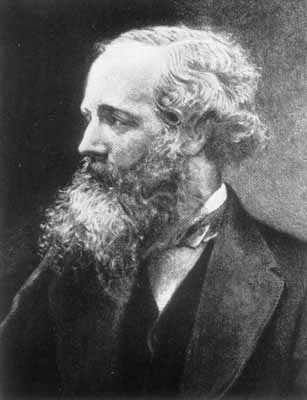

29 JAMES CLERK MAXWELL 1831-1879
Fisikawan
Inggris kesohor James Clerk Maxwell ini terkenal melalui
formulasi empat pernyataan yang menjelaskan hukum dasar
listrik dan magnit.
Kedua bidang ini sebelum Maxwell sudah diselidiki lama
sekali dan sudah sama diketahui ada kaitan antar keduanya.
Namun, walau pelbagai hukum listrik dan kemagnitan sudah
diketemukan dan mengandung kebenaran dalam beberapa segi,
sebelum Maxwell, tak ada satu pun dari hukum-hukum itu yang
merupakan satu teori terpadu. Dalam dia punya empat
perangkat hukum yang dirumuskan secara ringkas (tetapi punya
bobot tinggi), Maxwell berhasil menjabarkan secara tepat
perilaku dan saling hubungan antara medan listrik dan
magnit. Dengan begitu dia mengubah sejumlah besar fenomena
menjadi satu teori tunggal yang dapat dijadikan pegangan.
Pendapat Maxwell telah jadi anutan pada abad sebelumnya
secara luas baik di sektor teori maupun dalam praktek ilmu
pengetahuan.
Nilai terpenting dari, pendapat Maxwell yang baru itu
adalah: banyak persamaan umum yang bisa terjadi dalam semua
keadaan. Semua hukum-hukum listrik dan magnit yang sudah ada
sebelumnya dapat dianggap berasal dari pendapat Maxwell,
begitu pula sejumlah besar hukum lainnya, yang dulunya
merupakan teori yang tidak dikenal. Dari pendapat Maxwell
ini dapat diperlihatkan betapa pergoyangan bolak-balik
bidang elektromagnetik secara periodik adalah sesuatu hal
yang bisa terjadi. Gerak bolak-balik seperti pendulum ini
disebut gelombang elektromagnetik, yang bilamana sekali
digerakkan akan menyebar terus hingga angkasa luar. Dari
pendapat-pendapat ini mampu menunjukkan bahwa kecepatan
gelombang elektromagnetik itu mencapai sekitar 300.000
kilometer (186.000 mil) per detik. Maxwell mengetahui bahwa
ini sama dengan ukuran kecepatan cahaya. Dari sudut ini dia
dengan tepat mengambil kesimpulan bahwa cahaya itu sendiri
terdiri dari gelombang elektromagnetik.
Jadi, pendapat Maxwell bukan semata merupakan hukum dasar
dari kelistrikan dan kemagnitan, tetapi juga sekaligus
merupakan hukum dasar optik. Sesungguhnya, semua hukum
terdahulu yang dikenal sebagai hukum optik dapat dikaitkan
dengan pendapatnya, juga banyak fakta dan hubungan dengan
hal-hal yang dulunya tidak terungkapkan.
Cahaya yang tampak oleh mata bukan semata jenis yang
memungkinkan radiasi elektromagnetik. Pendapat Maxwell
menunjukkan bahwa gelombang elektromagnetik lain, berbeda
dengan cahaya yang tampak oleh mata dalam dia punya panjang
gelombang dan frekuensi, bisa saja ada. Kesimpulan teoritis
ini secara mengagumkan diperkuat oleh Heinrich Hertz, yang
sanggup menghasilkan dan menemui kedua gelombang yang tampak
oleh mata yang diramalkan oleh Maxwell itu. Beberapa tahun
kemudian Guglielmo Marconi memperagakan bahwa gelombang yang
tak terlihat mata itu dapat digunakan buat komunikasi tanpa
kawat sehingga menjelmalah apa yang namanya radio itu. Kini,
kita gunakan juga buat televisi, sinar X, sinar gamma, sinar
infra, sinar ultraviolet adalah contoh-contoh dari radiasi
elektromagnetik. Semuanya bisa dipelajari lewat hasil
pemikiran Maxwell.
Meski kemasyhuran Maxwell yang paling menonjol terletak
pada sumbangan pikirannya yang dahsyat di bidang
elektromagnetik dan optik, dia juga memberi sumbangan
penting bagi dunia ilmu pengetahuan di segi lain termasuk
teori-teori astronomi dan termodinamika (penyelidikan ihwal
panas). Salah satu minat khususnya adalah teori kinetik
tentang gas. Maxwell menyadari bahwa tidak semua molekul gas
bergerak pada kecepatan sama. Sebagian lebih lambat,
sebagian lebih cepat, dan sebagian lagi dengan kecepatan
yang luar biasa. Maxwell mencoba rumus khusus menunjukkan
bagian terkecil molekul bergerak (dalam suhu tertentu) pada
kecepatan yang tertentu pula. Rumus ini disebut "penyebaran
Maxwell," merupakan rumus yang paling luas terpakai dalam
rumus-rumus ilmiah, dan mengandung makna dan manfaat penting
pada tiap cabang fisika.
Maxwell dilahirkan di Edinburgh, Skotlandia, tahun 1831.
Dia teramatlah dini berkembang: pada usia lima belas tahun
dia sudah mampu mempersembahkan sebuah kertas kerja ilmiah
kepada "Edinburgh Royal Society." Dia masuk Universitas
Edinburgh dan tamat Universitas Cambridge. Kawin, tetapi tak
beranak. Maxwell umumnya dianggap teoritikus terbesar di
bidang fisika dalam seluruh masa antara Newton dan Einstein.
Kariernya yang cemerlang berakhir terlampau cepat karena dia
meninggal dunia tahun 1879 akibat serangan kanker, tak
berapa lama sehabis merayakan ulang tahunnya yang ke-48.
Situs web
- http://www-groups.dcs.st-and.ac.uk/~history/Mathematicians/Maxwell.html
- http://www.answersingenesis.org/home/area/bios/jc_maxwell.asp
- http://www.thecore.nus.edu.sg/landow/victorian/science/maxwell1.html
- http://scienceworld.wolfram.com/biography/Maxwell.html
|